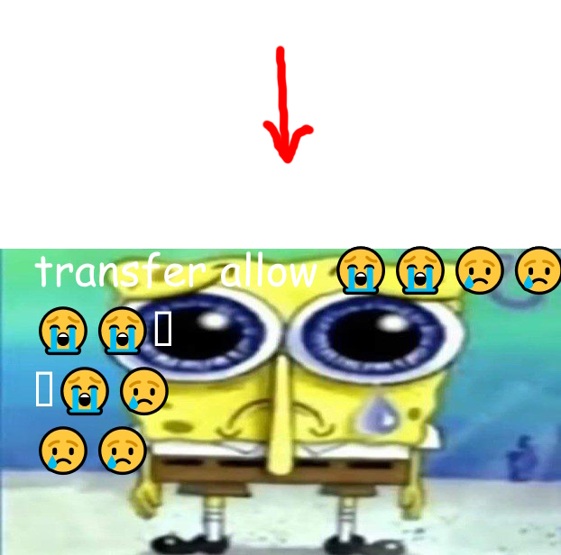

i figure we should probably familiarize ourselves with wooper and quagsire. here is an image of wooper and quagsire:

wooper is an axolotl-like creature with a derpy face that only comes out of the cold water for food, and quagsire is a bipedal amphibian
look at how derpy quagsire and wooper are. they are the literal definition of "no thoughts head empty". not to mention, wooper and quagsire are almost always smiling. they rarely feel sad at all. no thoughts = no sad 😁
jokes aside, wooper and quagsire are almost always depicted as being happy and playful, and basically every positive emotion you can think of. this further adds to their charm, only strengthing their "no thoughts head empty look".
